Agenda comercial
Cada chamada marcada traz o carrinho em aberto, o que ficou combinado na última conversa e uma lista curta do que preparar. O botão de chamar já abre a vitrine com o carrinho certo.
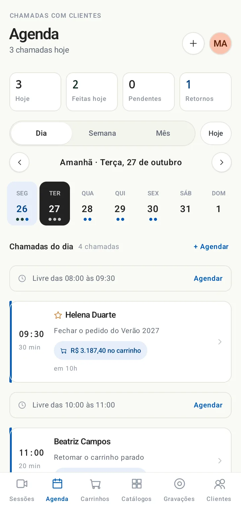
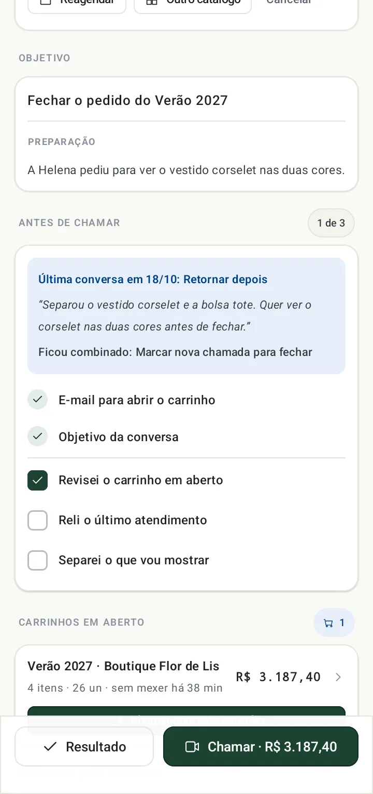
O vendedor liga pelo app e o lojista abre o catálogo no navegador do celular, sem instalar nada. Os dois navegam juntos pela mesma vitrine, conversando por voz, e o pedido fica pronto antes de desligar.
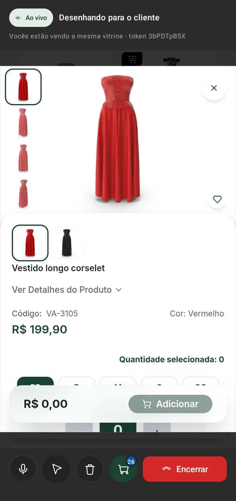
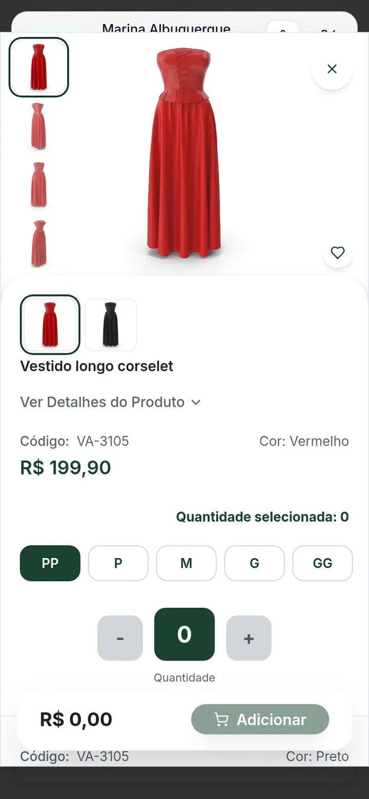
O WhatsApp aproximou vendedor e lojista. O TrovataCast coloca os dois diante da mesma vitrine, com a conversa acontecendo junto.
Acompanhe a Marina, representante da Vila Aurora Moda, fechando a reposição da Boutique Flor de Lis numa chamada de vinte minutos.
No compromisso da agenda, um toque gera o link da chamada e abre a conversa com o lojista. O link vale por 24 horas e também aparece como QR para quem está ao lado.
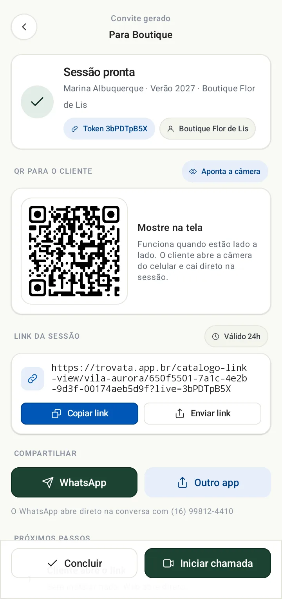
Ele abre o link no celular e cai direto na vitrine, com um aviso de que o vendedor está esperando. Não tem aplicativo para baixar nem cadastro novo.
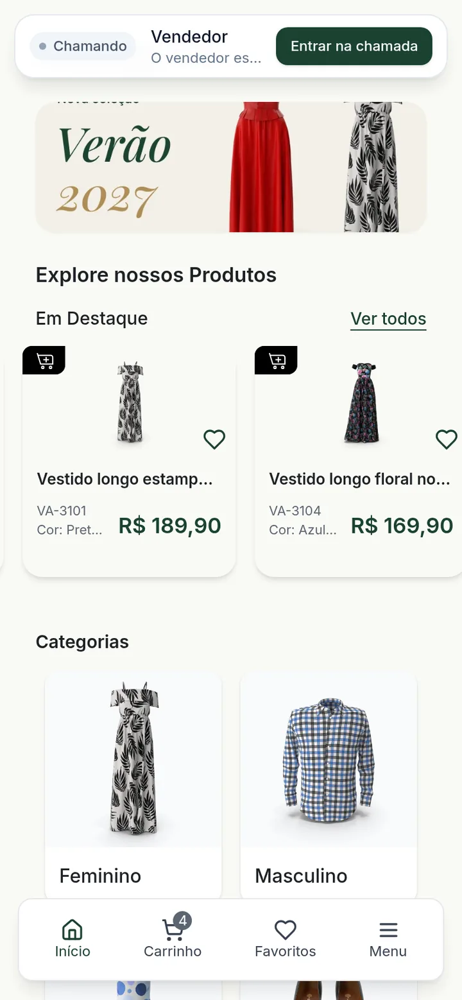
Quando a vendedora abre uma categoria ou uma peça, a tela do cliente vai junto, inclusive a rolagem. Se o cliente for olhar outra coisa, é a vendedora quem acompanha.
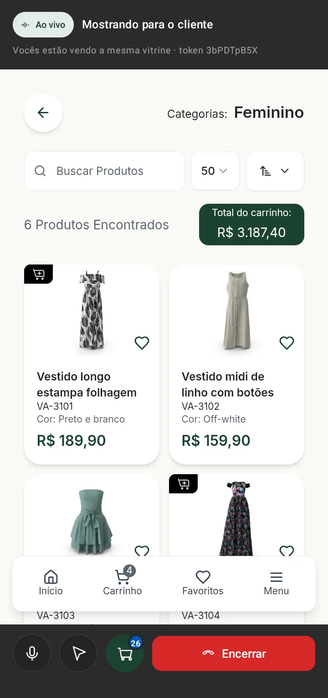
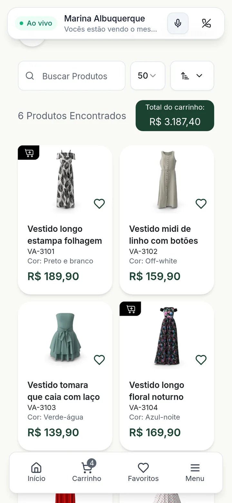
A grade que o cliente digita aparece no app na mesma hora, com o total atualizado. Quando ele confirma, a vendedora recebe o aviso e vê o pedido em construção, item por item.
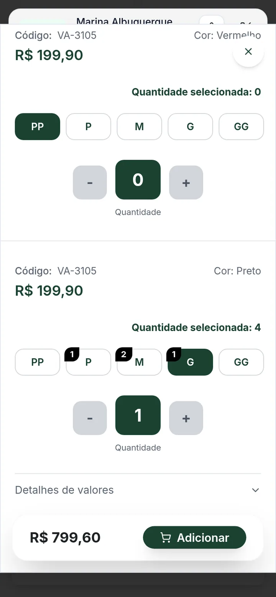
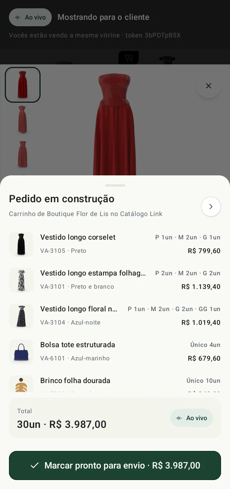
A vendedora marca o carrinho como pronto para envio sem sair da chamada. O pedido já está no Catálogo Link, do jeito que o cliente montou. Ninguém digita nada depois.
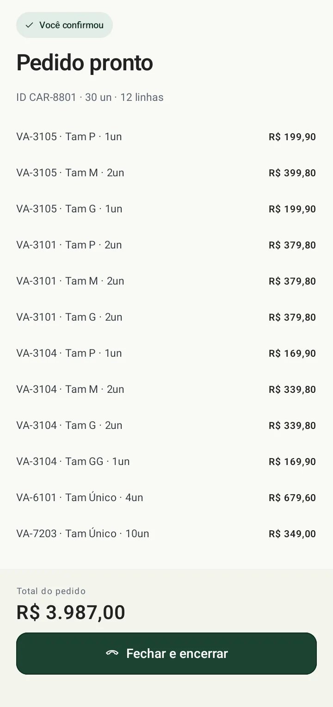
Ao encerrar, o app mostra o que o cliente abriu e não levou, até a quantidade que ele chegou a digitar. O retorno na agenda já sai com essas peças na preparação.
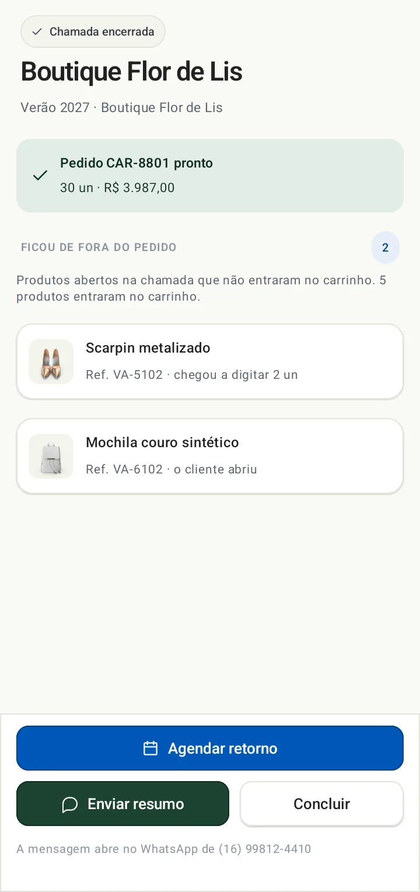
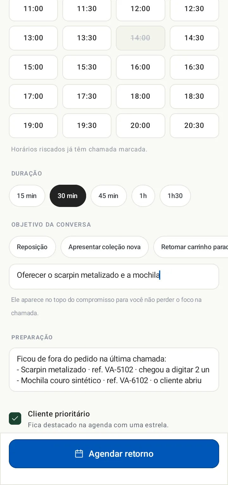
Cada chamada marcada traz o carrinho em aberto, o que ficou combinado na última conversa e uma lista curta do que preparar. O botão de chamar já abre a vitrine com o carrinho certo.


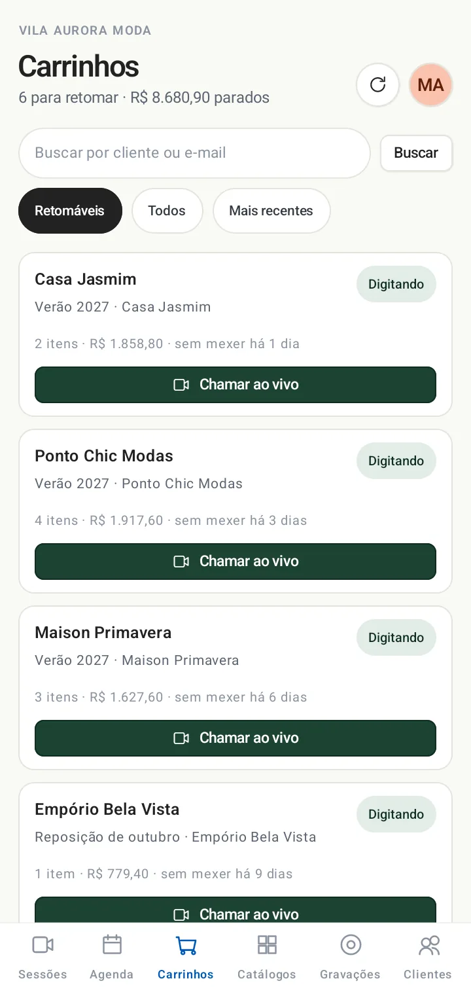
Quem começou um pedido e parou aparece com o valor e há quanto tempo está parado. Dá para chamar ao vivo direto da lista.
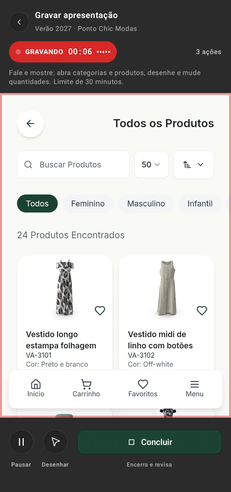
Para quem não pode atender agora, a vendedora grava um tour pela vitrine falando. O cliente recebe um link e assiste quando puder, na vitrine de verdade e não num vídeo.
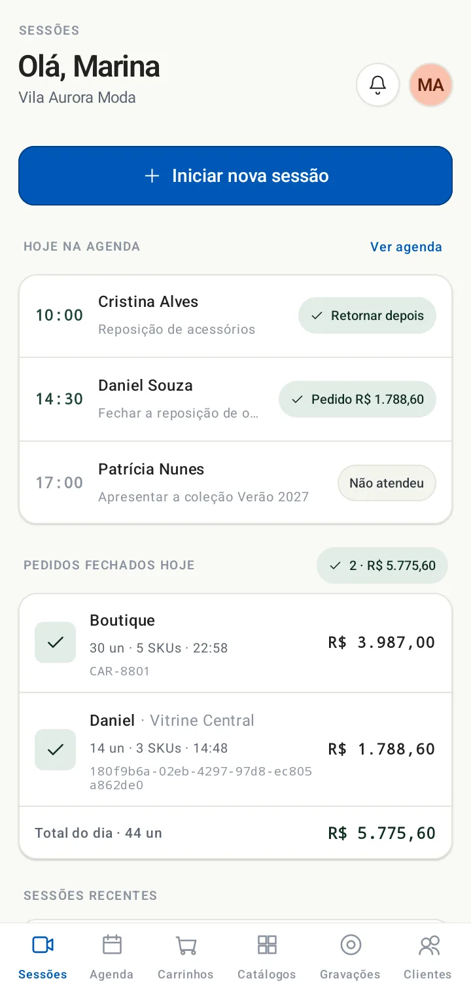
A tela inicial junta a agenda de hoje, o resultado de cada chamada e os pedidos fechados, com o total do dia.
Clientes, catálogos, preços e carrinhos vêm do SFA e do Catálogo Link da Trovata. Não existe cadastro paralelo, e o representante que atende mais de uma marca escolhe a empresa ao entrar.
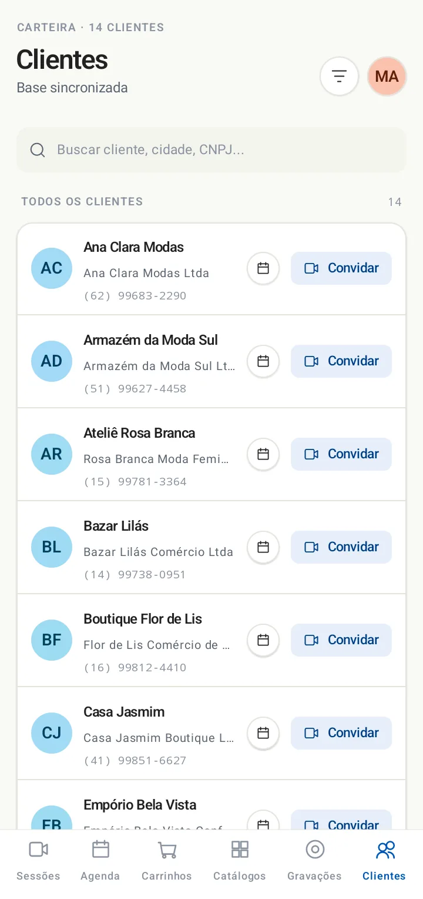
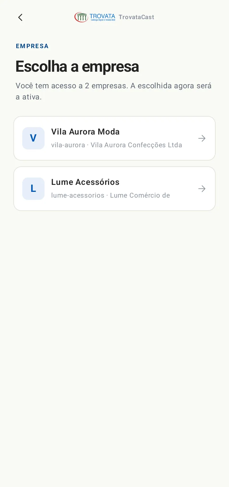
Que apresentam coleção para lojistas de várias cidades e não conseguem estar em todas as vitrines na semana do lançamento.
Com carteira grande, às vezes de mais de uma marca, que precisam encaixar várias apresentações no mesmo dia.
Que já vendem pelo Catálogo Link e querem fechar mais pedidos ainda na primeira conversa.
Em vinte minutos a gente faz uma chamada com você no papel do lojista, direto no seu celular. Você sente o produto do lado de quem compra.
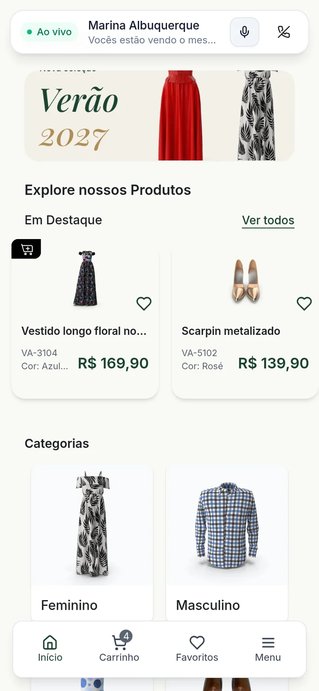